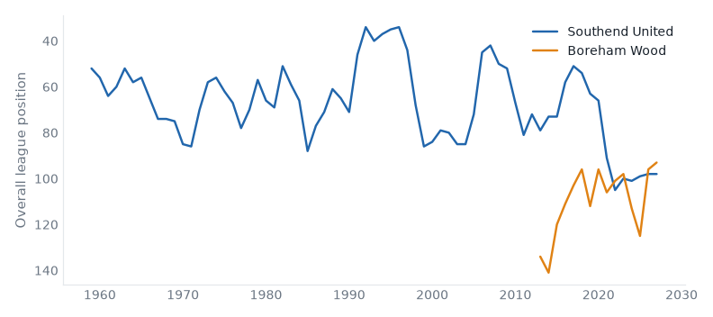
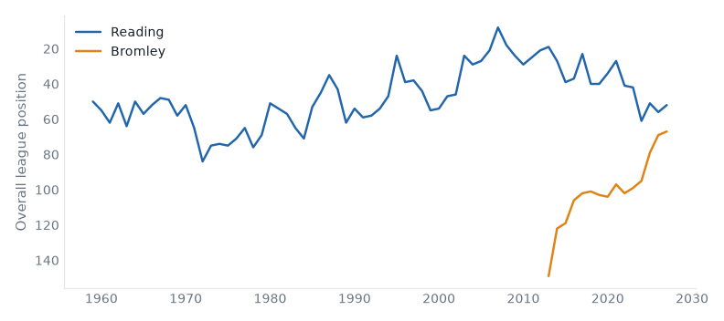

League One, League Two and the National League, 17 November to 23 November 2026. 36 results.Friday's preview.
Southend 2–3 Boreham Wood. Friday's case: top-three clash, 2 below level, yo-yo club. Southend down from 3rd to 6th; Boreham Wood stay 1st.
Huddersfield 0–1 Leicester. Friday's case: fallen giant, 2 below level, yo-yo club, relegated last season. Huddersfield down from 1st to 2nd; Leicester up from 11th to 10th.
Mansfield 1–1 Milton Keynes Dons. Friday's case: above level, neighbours, yo-yo club, promoted last season. Mansfield down from 12th to 13th; Milton Keynes Dons stay 9th.
Cambridge 0–3 Stockport. Friday's case: above level, yo-yo club, promoted last season. Cambridge down from 10th to 11th; Stockport up from 2nd to 1st.
Notts County 0–1 Stevenage. Friday's case: fallen giant, above level, neighbours, yo-yo club, promoted last season. Notts County down from 18th to 19th; Stevenage up from 16th to 14th.
Chesterfield 4–1 Shrewsbury. Friday's case: below level, neighbours, yo-yo club. Chesterfield up from 7th to 3rd; Shrewsbury down from 10th to 13th.
Southend 2–3 Boreham Wood compare
National League, Fri 20 Nov
Boreham Wood have 21 games unbeaten in a row, their longest run in their record. Boreham Wood have 48 points from 18 games, their best start in their record.

Reading 0–1 Bromley compare
League One, Sat 21 Nov
Bromley have 12 points from 14 games, their worst start in their record.

Aldershot 2–0 Scunthorpe compare
National League, Sat 21 Nov
Scunthorpe United have 11 points from 17 games, their worst start in their record.
Gateshead 1–2 Hartlepool compare
National League, Sat 21 Nov
Gateshead have 4 points from 17 games, their worst start in their record.
Worthing 2–1 Harrogate compare
National League, Sat 21 Nov
Worthing have 32 points from 18 games, their best start in their record.
Huddersfield 0–1 Leicester compare
League One, Sat 21 Nov
Huddersfield Town have 29 points from 15 games, their best start since 2011/12.
Notts County 0–1 Stevenage compare
League One, Sat 21 Nov
Stevenage beat Notts County for the first time since 2016/17.
Barnet 2–1 Port Vale compare
League Two, Sat 21 Nov
Barnet beat Port Vale for the first time since 2011/12.
Halifax 5–0 Woking compare
National League, Sat 21 Nov
Woking's 0-5 defeat by FC Halifax Town was their heaviest since 2012/13.
Sutton 1–0 Boston Utd compare
National League, Sat 21 Nov
Sutton United beat Boston United for the first time since 1989/90.
Tamworth 1–3 Eastleigh compare
National League, Sat 21 Nov
Tamworth have 17 points from 17 games, their worst start since 2013/14.
Wealdstone 4–0 Hornchurch compare
National League, Sat 21 Nov
Hornchurch have 24 points from 18 games, their best start since 2013/14.
Yeovil 3–2 Forest Green compare
National League, Sat 21 Nov
Yeovil Town beat Forest Green Rovers for the first time since 2002/03.
| Fri 20 | Barnsley | 1–2 | Sheffield Weds | ↓1 | compare | first win v Barnsley since 2020/21 |
| Sat 21 | Blackpool | 1–2 | Wigan | ↓2 ↑2 | compare | worst start since 2020/21 |
| Sat 21 | Bradford | 2–2 | Doncaster | ↑2 ↑1 | compare | worst start since 2021/22 |
| Sat 21 | Burton | 1–2 | Luton | ↓1 | compare | best start since 2017/18 |
| Sat 21 | Cambridge | 0–3 | Stockport | ↓1 ↑1 | compare | |
| Sat 21 | Huddersfield | 0–1 | Leicester | ↓1 ↑1 | compare | best start since 2011/12 |
| Sat 21 | Leyton Orient | 4–1 | AFC Wimbledon | ↑2 ↓1 | compare | |
| Sat 21 | Mansfield | 1–1 | Milton Keynes Dons | ↓1 | compare | worst start since 2021/22 |
| Sat 21 | Notts County | 0–1 | Stevenage | ↓1 ↑2 | compare | first win v Notts County since 2016/17 |
| Sat 21 | Oxford | 4–3 | Wycombe | ↓2 | compare | first win v Wycombe Wanderers since 2019/20 |
| Sat 21 | Plymouth | 0–2 | Peterboro | ↓1 ↑1 | compare | 3 games without scoring, longest since 2021/22 |
| Sat 21 | Reading | 0–1 | Bromley | ↓1 ↑1 | compare | worst start on record |
| P | W | D | L | GD | Pts | ||
|---|---|---|---|---|---|---|---|
| 1 | Stockport County | 8 | 6 | 0 | 2 | +9 | 18 |
| 2 | Oxford United | 8 | 5 | 3 | 0 | +8 | 18 |
| 3 | Reading | 8 | 5 | 1 | 2 | +9 | 16 |
| 4 | MK Dons | 8 | 4 | 3 | 1 | +9 | 15 |
| 5 | Huddersfield Town | 8 | 4 | 3 | 1 | +8 | 15 |
| 6 | Luton Town | 7 | 4 | 2 | 1 | +5 | 14 |
| 7 | Sheffield Wednesday | 8 | 3 | 4 | 1 | +12 | 13 |
| 8 | Wigan Athletic | 8 | 4 | 1 | 3 | -2 | 13 |
| 9 | Leyton Orient | 8 | 4 | 0 | 4 | +3 | 12 |
| 10 | Mansfield Town | 7 | 3 | 3 | 1 | +3 | 12 |
| 11 | AFC Wimbledon | 7 | 3 | 3 | 1 | 0 | 12 |
| 12 | Bradford City | 7 | 3 | 2 | 2 | +1 | 11 |
| 13 | Cambridge United | 8 | 3 | 2 | 3 | -2 | 11 |
| 14 | Stevenage | 6 | 3 | 1 | 2 | +3 | 10 |
| 15 | Burton Albion | 8 | 2 | 4 | 2 | +1 | 10 |
| 16 | Leicester City | 7 | 3 | 1 | 3 | -1 | 10 |
| 17 | Plymouth Argyle | 8 | 3 | 1 | 4 | -1 | 10 |
| 18 | Wycombe Wanderers | 7 | 2 | 3 | 2 | 0 | 9 |
| 19 | Blackpool | 7 | 2 | 2 | 3 | 0 | 8 |
| 20 | Doncaster Rovers | 6 | 2 | 2 | 2 | 0 | 8 |
| 21 | Notts County | 7 | 2 | 2 | 3 | 0 | 8 |
| 22 | Peterborough United | 6 | 1 | 2 | 3 | -4 | 5 |
| 23 | Barnsley | 7 | 1 | 2 | 4 | -6 | 5 |
| 24 | Bromley | 6 | 1 | 2 | 3 | -10 | 5 |
| Sat 21 | Accrington | 1–1 | Salford | ↓1 | compare | 13 games unbeaten, longest since 2018/19 |
| Sat 21 | Barnet | 2–1 | Port Vale | ↓2 | compare | first win v Port Vale since 2011/12 |
| Sat 21 | Cheltenham | 0–3 | Bristol Rvs | ↓3 ↑2 | compare | best start since 2020/21 |
| Sat 21 | Chesterfield | 4–1 | Shrewsbury | ↑4 ↓3 | compare | |
| Sat 21 | Crawley Town | 2–1 | Fleetwood Town | ↓4 | compare | |
| Sat 21 | Gillingham | 3–3 | Crewe | ↑1 ↓1 | compare | |
| Sat 21 | Grimsby | 0–0 | Rotherham | ↓1 | compare | |
| Sat 21 | Newport County | 2–0 | Swindon | ↑5 ↓1 | compare | best start since 2021/22 |
| Sat 21 | Northampton | 3–2 | Rochdale | ↑1 | compare | |
| Sat 21 | Oldham | 1–1 | Exeter | compare | ||
| Sat 21 | Tranmere | 2–1 | Colchester | ↑5 | compare | |
| Sat 21 | York | 0–0 | Walsall | ↓1 ↓1 | compare |
| P | W | D | L | GD | Pts | ||
|---|---|---|---|---|---|---|---|
| 1 | Salford City | 8 | 6 | 1 | 1 | +5 | 19 |
| 2 | York City | 8 | 5 | 3 | 0 | +11 | 18 |
| 3 | Newport County | 8 | 5 | 3 | 0 | +10 | 18 |
| 4 | Exeter City | 8 | 5 | 3 | 0 | +7 | 18 |
| 5 | Port Vale | 7 | 5 | 2 | 0 | +7 | 17 |
| 6 | Barnet | 8 | 5 | 2 | 1 | +6 | 17 |
| 7 | Cheltenham Town | 8 | 5 | 1 | 2 | +1 | 16 |
| 8 | Chesterfield | 8 | 4 | 3 | 1 | +10 | 15 |
| 9 | Fleetwood Town | 8 | 4 | 3 | 1 | +6 | 15 |
| 10 | Tranmere Rovers | 8 | 4 | 3 | 1 | +6 | 15 |
| 11 | Accrington Stanley | 8 | 3 | 5 | 0 | +5 | 14 |
| 12 | Grimsby Town | 8 | 4 | 2 | 2 | +5 | 14 |
| 13 | Crewe Alexandra | 8 | 3 | 5 | 0 | +4 | 14 |
| 14 | Swindon Town | 8 | 4 | 2 | 2 | +2 | 14 |
| 15 | Bristol Rovers | 8 | 4 | 1 | 3 | +1 | 13 |
| 16 | Shrewsbury Town | 8 | 4 | 1 | 3 | +1 | 13 |
| 17 | Colchester United | 7 | 3 | 3 | 1 | +2 | 12 |
| 18 | Walsall | 6 | 3 | 2 | 1 | +4 | 11 |
| 19 | Oldham Athletic | 8 | 3 | 2 | 3 | +3 | 11 |
| 20 | Northampton Town | 8 | 3 | 2 | 3 | +1 | 11 |
| 21 | Gillingham | 8 | 2 | 4 | 2 | -1 | 10 |
| 22 | Rochdale | 8 | 3 | 1 | 4 | -4 | 10 |
| 23 | Rotherham United | 7 | 1 | 5 | 1 | -2 | 8 |
| 24 | Crawley Town | 7 | 1 | 2 | 4 | -5 | 5 |
| Fri 20 | Southend | 2–3 | Boreham Wood | ↓3 | compare | 21 games unbeaten, longest on record |
| Sat 21 | Aldershot | 2–0 | Scunthorpe | ↑3 | compare | worst start on record |
| Sat 21 | Barrow | 0–2 | Carlisle | ↓1 ↑1 | compare | 5 wins, longest since 2018/19 |
| Sat 21 | Gateshead | 1–2 | Hartlepool | ↑2 | compare | worst start on record |
| Sat 21 | Halifax | 5–0 | Woking | ↑2 ↓3 | compare | heaviest defeat since 2012/13 |
| Sat 21 | Kidderminster | 2–2 | Fylde | ↓1 ↑1 | compare | best start since 2018/19 |
| Sat 21 | Solihull | 2–1 | Altrincham | ↑2 ↓1 | compare | worst start since 2017/18 |
| Sat 21 | Sutton | 1–0 | Boston Utd | ↓2 | compare | first win v Boston United since 1989/90 |
| Sat 21 | Tamworth | 1–3 | Eastleigh | ↓2 ↑2 | compare | worst start since 2013/14 |
| Sat 21 | Wealdstone | 4–0 | Hornchurch | ↑2 ↓1 | compare | best start since 2013/14 |
| Sat 21 | Worthing | 2–1 | Harrogate | compare | best start on record | |
| Sat 21 | Yeovil | 3–2 | Forest Green | ↑1 ↓2 | compare | first win v Forest Green Rovers since 2002/03 |
| P | W | D | L | GD | Pts | ||
|---|---|---|---|---|---|---|---|
| 1 | Harrogate Town | 9 | 7 | 1 | 1 | +17 | 22 |
| 2 | Boreham Wood | 8 | 7 | 1 | 0 | +14 | 22 |
| 3 | FC Halifax Town | 10 | 6 | 2 | 2 | +14 | 20 |
| 4 | Yeovil Town | 10 | 5 | 3 | 2 | +10 | 18 |
| 5 | Hornchurch | 8 | 6 | 0 | 2 | +7 | 18 |
| 6 | Worthing | 10 | 5 | 2 | 3 | +4 | 17 |
| 7 | Aldershot Town | 9 | 5 | 1 | 3 | +6 | 16 |
| 8 | Altrincham | 8 | 5 | 1 | 2 | +4 | 16 |
| 9 | Southend United | 9 | 5 | 1 | 3 | +2 | 16 |
| 10 | Sutton United | 10 | 5 | 1 | 4 | -2 | 16 |
| 11 | Carlisle United | 9 | 4 | 3 | 2 | +6 | 15 |
| 12 | Eastleigh | 9 | 4 | 3 | 2 | +2 | 15 |
| 13 | AFC Fylde | 8 | 4 | 2 | 2 | +5 | 14 |
| 14 | Kidderminster Harriers | 10 | 3 | 5 | 2 | +2 | 14 |
| 15 | Barrow | 8 | 4 | 1 | 3 | +4 | 13 |
| 16 | Tamworth | 9 | 4 | 1 | 4 | +2 | 13 |
| 17 | Forest Green Rovers | 9 | 3 | 2 | 4 | -1 | 11 |
| 18 | Hartlepool United | 8 | 3 | 1 | 4 | -1 | 10 |
| 19 | Boston United | 9 | 3 | 1 | 5 | -3 | 10 |
| 20 | Wealdstone | 9 | 3 | 1 | 5 | -4 | 10 |
| 21 | Solihull Moors | 10 | 3 | 0 | 7 | -10 | 9 |
| 22 | Scunthorpe United | 7 | 2 | 2 | 3 | +1 | 8 |
| 23 | Woking | 8 | 2 | 2 | 4 | -2 | 8 |
| 24 | Gateshead | 8 | 1 | 1 | 6 | -10 | 4 |
Boreham Wood: 21 games unbeaten in a row, equalling their record (2026/27).
Gateshead: 15 games without a win in a row; the record is 16 (2025/26).
Gateshead: 11 defeats in a row; the record is 13 (2025/26).
Carlisle United: 5 wins in a row; the record is 7 (2005/06).
Solihull Moors: 4 wins in a row; the record is 6 (2022/23).
Plymouth Argyle: 3 games without scoring in a row; the record is 5 (2005/06).
Built from the English football database, tiers 1–5 from 1958/59. Results from football-data.co.uk. Archived copy.